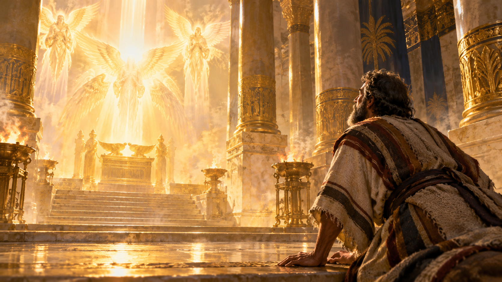
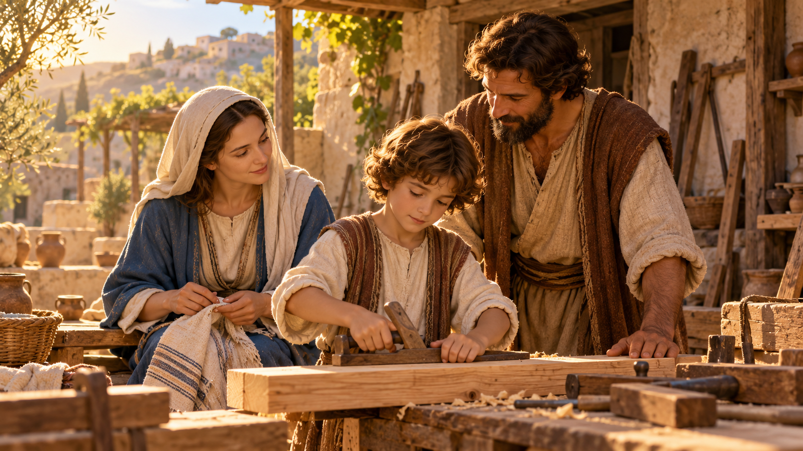
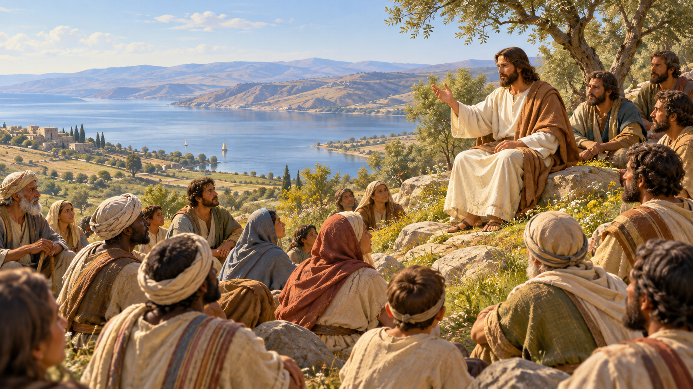

Canónico y apócrifo
edad primordial
Enoc y los vigilantes
Génesis presenta a Enoc como quien «caminó con Dios». El Libro de Enoc amplía esa figura con visiones celestes, vigilantes y un viaje por los cielos.
Génesis 5:21–24
Judas 1:14–15
1 Enoc 1
1 Enoc 14
Canónico
éxodo y Sinaí
Moisés y la alianza
El relato de Moisés une liberación, desierto y Ley: desde la zarza ardiente hasta la alianza en el Sinaí, una memoria fundante para la historia de Israel.
Éxodo 3:1–6
Éxodo 12:1–14
Éxodo 20:1–17
Deuteronomio 34:1–12
Relato bíblico · sitio discutido
desierto · tradición del Éxodo
La Roca de Moisés
Éxodo 17 sitúa el agua de la roca después del cruce del mar Rojo y antes de la llegada al Sinaí. Números 20 narra otro episodio, años más tarde, en Meribá de Cades; no conviene confundir ambos relatos. La formación de la imagen es una identificación tradicional discutida, no una ubicación arqueológica confirmada.
Éxodo 17:1–7
Números 20:1–13

Canónico
siglo 8 a. C.
Isaías y la esperanza
En una época de crisis política, Isaías denuncia la injusticia y anuncia juicio, consuelo y restauración. Sus imágenes de paz y del siervo marcan la lectura posterior.
Isaías 6:1–8
Isaías 7:14
Isaías 9:6–7
Isaías 53:1–12
Canónico
siglos 10–4 a. C.
Los libros más antiguos
La Torá, los salmos y los profetas trazan la historia, la alianza y la esperanza de Israel. La línea comienza con las promesas y voces que preceden a los evangelios.
Génesis 12:1–3
Isaías 9:6
Miqueas 5:2
Contexto histórico
siglos 2 a. C.–1 d. C.
El mundo del Segundo Templo
Judea vive entre tradiciones judías diversas, dominio imperial y expectativa de liberación. Los libros deuterocanónicos, Qumrán y otros textos ayudan a dibujar ese escenario.
Daniel 7:13–14
Explorar 1 Enoc
Canónico
Los relatos de nacimiento sitúan a Jesús con María y José, en Belén y luego Nazaret. Mateo y Lucas conservan perspectivas distintas y complementarias de esos primeros años.
Lucas 2:1–20
Mateo 1:18–25
Canónico
primeros años
Huida y regreso a Nazaret
Mateo cuenta la huida a Egipto para proteger al niño y el regreso posterior de la familia a Nazaret.
Mateo 2:13–23

Tradición apócrifa
infancia de Jesús
Relatos del niño Jesús
El Evangelio de la Infancia de Tomás cuenta que un niño muere tras chocar con Jesús (cap. 4). En otro episodio, Zeno cae de una terraza y Jesús lo devuelve a la vida (cap. 9): son relatos distintos.
Capítulo 4 · el niño muere
Capítulo 9 · Jesús revive a Zeno
Canónico
a los doce años
Jesús adolescente en el Templo
Jesús se queda en Jerusalén dialogando con los maestros del Templo; María y José lo encuentran después de buscarlo.
Lucas 2:41–52
Canónico
inicio del ministerio · 40 días
Ayuno y tentación en el desierto
Después de su bautismo, Jesús ayuna cuarenta días en el desierto. El diablo lo tienta tres veces antes de que comience a predicar públicamente.
Marcos 1:9–13
Mateo 4:1–11
Canónico
c. 6–4 a. C. · presentación en el templo
Simeón carga al niño Jesús
María y José llevan a Jesús al Templo. Simeón, anciano justo, lo toma en sus brazos y bendice a Dios al reconocer al niño como luz para las naciones.
Lucas 2:25–35

Canónico
c. 27–30 d. C.
Jesús adulto
Predica el Reino de Dios, enseña en parábolas, llama discípulos y sana. Los evangelios sitúan su ministerio público en Galilea y Judea.
Marcos 1:14–15
Lucas 4:16–21
Canónico
ministerio público
Parábolas, signos y discípulos
Las parábolas describen el Reino; las curaciones y las comidas compartidas marcan el modo en que Jesús se acerca a enfermos, excluidos y seguidores.
Mateo 5:1–12
Juan 11:43–44
Canónico
la última noche
La cena y el arresto
En Jerusalén comparte una última cena con sus discípulos, ora en Getsemaní y es arrestado. Este tramo prepara la narración de la pasión.
Lucas 22:7–54
Canónico
Pascua, c. 30 d. C.
Pasión, muerte y sepultura
La última cena, el arresto, el juicio y la crucifixión conducen a la sepultura. Los cuatro evangelios cuentan estos hechos desde ángulos propios.
Lucas 23:33–49
Juan 19:28–30
Canónico y tradición
entre muerte y resurrección
Evangelio de Nicodemo
En el relato apócrifo, Cristo rompe las puertas del Hades, libera a los justos y vence al Diablo. Antes de su llegada, Satanás habla con Hades y pide a La Furia que se prepare para recibirlo; no se describe un combate directo de Jesús contra La Furia.
Hechos 2:27–31
Nicodemo 17–19 · descenso y liberación
Nicodemo 21 · Satanás y La Furia (numeración variable)
Tradición apócrifa
tres días entre muerte y resurrección
Carino y Leucio, testigos del descenso
El Evangelio de Nicodemo relata que, durante los tres días, Jesús desciende al purgatorio y revive a Carino y Leucio. El texto los presenta como hijos de Simeón, el anciano que cargó a Jesús en el Templo; ambos narran lo que vieron.
Evangelio de Nicodemo · capítulos 17–27
Canónico
Pascua y 40 días
Jesús resucitado
Se aparece a sus discípulos, comparte con ellos, los envía y habla del Reino de Dios. Después, Hechos narra la ascensión.
Lucas 24:36–49
Hechos 1:3–9
Canónico
misión y ascensión
Lo que dijo e hizo resucitado
Jesús resucitado explica las Escrituras, comparte la paz con sus discípulos y los envía a anunciar el mensaje. La secuencia culmina con la ascensión en Hechos.
Juan 20:19–23
Mateo 28:16–20
Tradición gnóstica
tradiciones de los siglos 2–3 d. C.
El Resucitado en María Magdalena y Nag Hammadi
El Evangelio de María Magdalena y varios textos de Nag Hammadi describen diálogos del Resucitado con sus discípulos, con un lenguaje espiritual distinto al de los evangelios canónicos.
Evangelio de María Magdalena